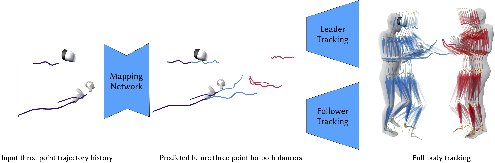

Dancing Points: Synthesizing Ballroom Dancing with Three-Point Inputs


Paper
Code
Data and Model
(coming in March)
Ballroom dancing is a structured yet expressive motion category. Its highly diverse movement and complex interactions between leader and follower dancers make the understanding and synthesis challenging. We demonstrate that the three-point trajectory available from a virtual reality (VR) device can effectively serve as a dancer's motion descriptor, simplifying the modeling and synthesis of interplay between dancers' full-body motions down to sparse trajectories. Thanks to the low dimensionality, we can employ an efficient MLP network to predict the follower's three-point trajectory directly from the leader's three-point input for certain types of ballroom dancing, addressing the challenge of modeling high-dimensional full-body interaction. It also prevents our method from overfitting thanks to its compact yet explicit representation. By leveraging the inherent structure of the movements and carefully planning the autoregressive procedure, we show a deterministic neural network is able to translate three-point trajectories into a virtual embodied avatar, which is typically considered under-constrained and requires generative models for common motions. In addition, we demonstrate this deterministic approach generalizes beyond small, structured datasets like ballroom dancing, and performs robustly on larger, more diverse datasets such as LaFAN. Our method provides a computationally- and data-efficient solution, opening new possibilities for immersive paired dancing applications.
@inproceedings{Li2026dancingpoints,
title={Dancing Points: Synthesizing Ballroom Dancing with Three-Point Inputs},
author={Li, Peizhuo and Starke, Sebastian and Ye, Yuting and Sorkine-Hornung, Olga},
booktitle = {arxiv},
year = {2026}
}